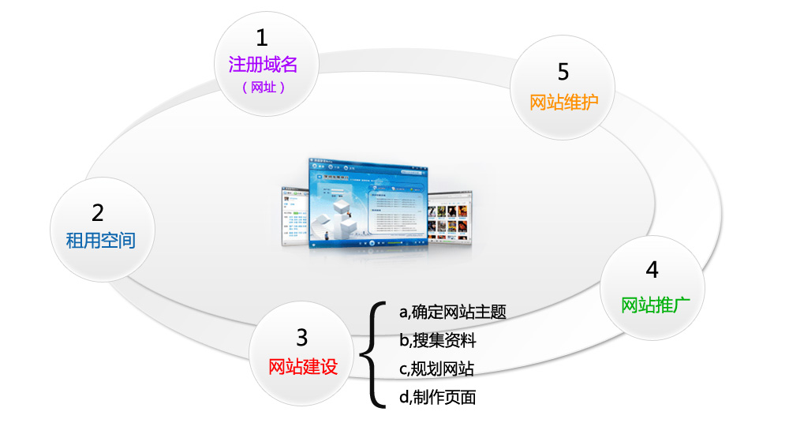

DAY1：HTML基础
学习目标
- 1、本专业介绍、HTML相关概念，HTML发展历史
- 2、WEB标准，W3C/WHATWG/ECMA相关概念
- 3、相关软件的应用以及站点的创建
- 4、HTML基本结构和HTML语法
- 5、HTML常用标记
一、本专业介绍、HTML相关概念，HTML发展历史
本专业介绍
移动前端/WEB前端
网站建站流程

二、WEB标准，W3C/WHATWG/ECMA相关概念
WEB标准的概念及组成

组织解析：
（1）W3C( World Wide Web Consortium )万维网联盟，创建于1994年是Web技术领域最具权威和影响力的国际中立性技术标准机构。
W3C (制定了结构(xhtml、xml)和表现(css)的标准，非赢利性的。)
（2）ECMA(European Computer Manufactures Association) 欧洲电脑场商联合会。
ECMA制定了行为(DOM(文档对象模型)，ECMAScript)标准
（3）WHATWG网页超文本应用技术工作小组是：
一个以推动网络HTML 5 标准为目的而成立的组织。在2004年，由Opera、Mozilla基金会和苹果这些浏览器厂商组成。
HTML及相关概念的介绍
HTML 指的是超文本标记语言 (Hyper Text Markup Language) www万维网的描述性语言。
XHTML指可扩展超文本标记语言（标识语言）（EXtensible HyperText Markup Language）是一种置标语言，表现方式与超文本标记语言（HTML）类似，不过语法上更加严格。
HTML5指的是HTML的第五次重大修改（第5个版本）(HTML5 是 W3C 与 WHATWG 合作的结果)
HTML发展历史

三、相关软件的应用以及站点的创建
1)站点的作用
A/ 用来归纳一个网站上所有的网页、素材以及他们之间的联系
B/ 规划网站的所有内容和代码 整合资源
2)创建站点的步骤
创建网页所需各个文件夹 css、js、images
3)文件的命名规则
A/ 件命名规则：用英文，不用中文
B/ 名称全部用小写英文字母、数字、下划线的组合，其中不得包含汉字、空格和特殊字符；必须以英文字母开头。@#￥%……！ -_
C/ 网站的首页必须命名为index.html不建议使用shouye.html
四、HTML基本结构和HTML基本语法
HTML基本结构

HTML的基本语法
1、<常规标记><标记 属性=“属性值” 属性=“属性值”></标记>例如：<head></head>
2.空标记<标记 属性=“属性值” />例如：<meta charset=”utf-8”> <br/>
说明：
1.写在<>中的第一个单词叫做标记，标签，元素。
2.标记和属性用空格隔开，属性和属性值用等号连接，属性值必须放在“”号内。
3.一个标记可以没有属性也可以有多个属性，属性和属性之间不分先后顺序。
4.空标记没有结束标签，用“/”代替。<br/>
五、HTML常用标记
1、文本标题（h1-h6）
<h1>LOGO</h1><h2>次要栏目或标题-小标题H2</h2><h3>再次要栏目或分类小标题H3</h3><h4>文中分类小标题H4</h4><h5>二级标题</h5><h6>六级标题</h6>html标题标签使用原则：H1在一个网页中最好只使用一次，如对一个网页LOGO使用。
2、段落文本(p)
<p>段落文本内容</p>标识一个段落(段落与段落之间有段间距)
3、空格
所占位置没有一个确定的值,这与当前字体字号都有关系.
4、换行(br)
<br />换行是一个空标记(强制换行)
5、加粗 加粗有两个标记
A、<b>加粗内容</b>B、<strong>加粗内容</strong>
6、倾斜
<em></em> ,<i></i>
7、水平线
<hr />空标记
8、列表(ul,ol,dl)
HTML中有三种列表分别是：无序列表，有序列表，自定义列表
知识扩展2----有序列表的属性
1)、type:规定列表中的列表项目的项目符号的类型语法：<ol type="a"></ol>1 数字顺序的有序列表（默认值）（1, 2, 3, 4）。a 字母顺序的有序列表，小写（a, b, c, d）。A 字母顺序的有序列表，大写（A,B,C,D)i 罗马数字，小写（i, ii, iii, iv）。I 罗马数字，大写（I, ii, iii, iv）。2)、start 属性规定有序列表的开始点。语法：<ol start="5"></ol>
9、插入图片
<img src="目标文件路径及全称" alt="图片替换文本" title="图片标题" />注:所要插入的图片必须放在站点下title的作用: 在你鼠标悬停在该图片上时显示一个小提示，鼠标离开就没有了，HTML的绝大多数标签都支持title属性，title属性就是专门做提示信息的alt的作用:alt属性是在你的图片因为某种原因不能加载时在页面显示的提示信息，它会直接输出在原本加载图片的地方。*相对路径的写法：1)当当前文件与目标文件在同一目录下，直接书写目标文件文件名+扩展名；<img src=”q12.jpg”/>2)当当前文件与目标文件所处的文件夹在同一目录下，写法如下：文件夹名/目标文件全称+扩展名；<img src=”images/q12.jpg”/>3)当当前文件所处的文件夹和目标文件所处的文件夹在同一目录下，写法如下：../目标文件所处文件夹名/目标文件文件名+扩展名；<img src=”../images/q12.jpg”/>
10、超链接的应用
语法：<a href="目标文件路径及全称/连接地址" title="提示文本">链接文本/图片</a><a href="#"></a>空链接属性：target:页面打开方式，默认属性值_self。属性值：_blank 新窗口打开<a href="#" target="_blank">新页面打开</a>
11、div和span的用法
<div ></div>没有具体含义，统称为块标签，用来设置文档区域，是文档布局常用对象<span> </span>文本结点标签可以是某一小段文本，或是某一个字。
12、数据表格的作用及组成
作用：显示数据表格组成<table width="value" height="value" border="value" bgcolor="value" cellspacing="value" cellpadding="value"><tr><td></td><td></td></tr></table>注：一个tr表示一行;一个td表示一列(一个单元格)*数据表格的相关属性1）width="表格的宽度"2）height="表格的高度"3）border="表格的边框"4）bgcolor="表格的背景色" bg=background5）bordercolor="表格的边框颜色"6）cellspacing="单元格与单元格之间的间距"7）cellpadding="单元格与内容之间的空隙"8）对齐方式：align="left/center/right";9)合并单元格属性：colspan=“所要合并的单元格的列数"合并列;rowspan=“所要合并单元格的行数”合并行;
13、表单的作用及组成
表单的作用：用来收集用户的信息的;
1)、表单框
<form name="表单名称" method="post/get" action=""></form>
2）文本框
<input type="text" value="默认值"/>
3)密码框
<input type="password" /><input type="password" placeholder="密码" />
4)重置按钮
<input type="reset" value="按钮内容" />
5）单选框/单选按钮
<input type="radio" name="ral" /><input type="radio" name="ral" checked="checked" />单选按钮里的name属性必须写，同一组单选按钮的name属性值必须一样。checked="checked"(默认选中；) disabled="disabled"禁用
6）复选框
<input type="checkbox" name="like" /><input type="checkbox" name="like" disabled="disabled" /> (disabled="disabled" :禁用)(checked="checked" :默认选中)
7)下拉菜单
<select name=""><option>菜单内容</option></select>
8）多行文本框（文本域）
<textarea name="textareal" cols="字符宽度" rows="行数"></textarea>
9)按钮
<input name="'" type="button" value=“按钮内容” /><input name="'" type="submit" value=“按钮内容” /><button></button>
button和submit的区别是：
submit是提交按钮起到提交信息的作用，type类型是button只起到跳转的作用，不进行提交。
扩展知识点3：对于不同的输入类型，value 属性的用法的意义
value 属性为 input 元素设定值。对于不同的输入类型，value 属性的用法也不同：type="button", "reset", "submit" - 定义按钮上的显示的文本type="text", "password" - 定义输入字段的初始值type="checkbox", "radio" - 定义与输入相关联的值注释：<input type="checkbox"> 和 <input type="radio"> 中必须设置 value 属性。
扩展知识点4：
<form name="表单名称" method="post/get" action=""></form>Form中的获取数据的两个方式get和post的区别？1. get是从服务器上获取数据，post是向服务器传送数据。2. get是把参数数据队列加到提交表单的ACTION属性所指的URL中，值和表单内各个字段一一对应，在URL中可以看到。post是通过HTTP post机制，将表单内各个字段与其内容放置在HTML HEADER内一起传送到ACTION属性所指的URL地址。用户看不到这个过程。3. 对于get方式，服务器端用Request.QueryString获取变量的值，对于post方式，服务器端用Request.Form获取提交的数据。4. get传送的数据量较小，不能大于2KB。post传送的数据量较大，一般被默认为不受限制。5. get安全性非常低，post安全性较高。但是执行效率却比Post方法好。建议：1、get方式的安全性较Post方式要差些，包含机密信息的话，建议用Post数据提交方式；2、在做数据查询时，建议用Get方式；而在做数据添加、修改或删除时，建议用Post方式；